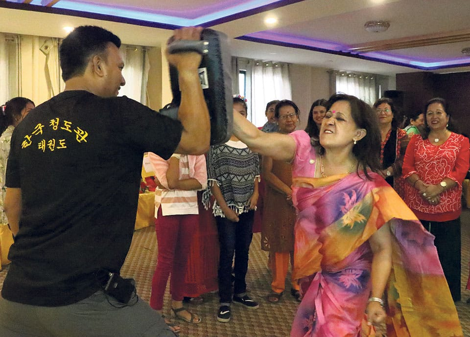

Voilence against women is a social problem that stops the devolopment of the society. So we have to start changing people's mentality to save the world from the consequences of this mistreatment. If self-defence program is implemented properly, women might be able to protect themselves and other women facing trouble. According to the primary research, people beleive it will work towards ensuring better safety for women. Women will gain confidence. Possibly, it will force victimizers or attackers to rethink before committing such disgraceful acts.
Self-defense is one of the most important skills women can learn, especially in this perilous times. There are five reasons women’s self-defense is something every woman should take seriously. Here’s a look at why female self defense in NYC and other cities is something important to learn. Having the ability to physically stand up for yourself is important as well. Martial arts for women can teach them not only the art of verbal jiu-jitsu, but the art of physical jiu-jitsu as well. Examples taught in female self-defense classes in NYC can teach women how to escape from an assailant or subdue him.

Women who train in self-defense feel empowered. They are resilient, able to handle all types of adversity, whether big or small. They also have the confidence to handle things because of the physical and mental skills they learn in women’s self-defense classes.Having good energy, and confident energy, coming from you makes it clear you are a force to be reckoned with. Martial arts classes for women can help them get this empowerment.
Why Women Need to Learn Self-Defense We live in dangerous times, more and more we see that there are violent crimes taking place and more and more they seem to be directed at women. Women are being victimized in so many different aspects of life and unfortunately it is hard for them to establish a sense of security anywhere. Women feel a sense of fear in their day to day lives and it is unfair for them to have to feel this way. Every day when they go to work, school, bars, clubs, the mall, and even their own cars they have to deal with a sense of fear.
It’s normal for a parent to care and be alert about their child’s safety. There are many occasions when you aren’t physically present with your child, be it school or co-curricular activities. During such events there exists a possibility of danger to your child in the form of bullying or something even worse. Hence children must know how to defend themselves. Self-defence is a valuable skill that protects and even raises confidence in your child. Here are some of the top self-defence techniques you need to teach your child.

I have taken permission in karate center to know about self defense for women and children. we collect information from the karate master. master told self defense is important they can protect them self . they also have the confident thow to Handel. Then we give that information to the women's to learn basic self defense . we advice to children nust know how to defend themselves. self defense is one of the most important skill women and children can learn, especially in the perils time.


If self-defense program is implemented properly, and women might be able to protect themselves and other women facing trouble. According to the primary research, people beleive it will work towards better safety for women. Women will gain confidence. Possibly, it will force victimizers ot attackers to rethink before committing such disgraceful acts.